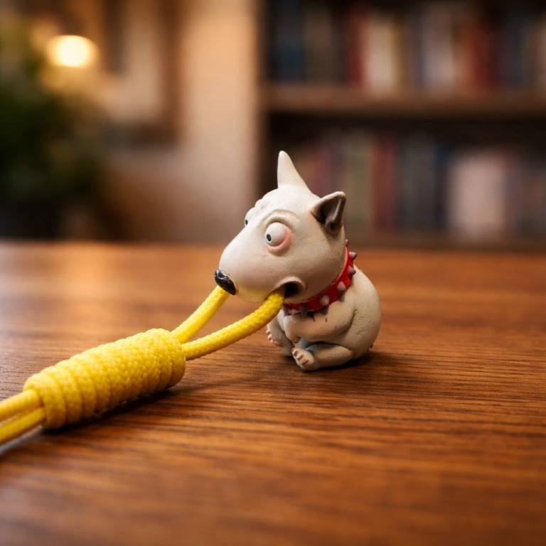
Петля Линча — простой и удобный способ сделать компактный темляк с бусиной, когда нужен аккуратный подвес без сложного плетения.
В темлячной теме это название встречается чаще всего именно для такой намотанной затягивающейся основы. Конструкция получается компактной, хорошо смотрится на ноже, фонаре, ключах или другом небольшом EDC-аксессуаре и при этом собирается довольно быстро.
В этом мастер-классе показан весь процесс: что понадобится для работы, как подготовить шнур, зачем нужна трубочка, как сделать плотную намотку, сформировать финальную петлю, поставить бусину, соединить два конца шнура в одну нить и утянуть место соединения внутрь плетения. Ниже, как и в других мастер-классах раздела, есть и видео процесса, чтобы было проще уловить логику движений.
Если хотите посмотреть и другие варианты, загляните в раздел мастер-классов по темлякам, а для общего контекста по теме пригодится и статья как сделать темляк для ножа.
Это не полный каталог. Если нужна другая форма, размер или настроение — откройте все бусины для темляка или посмотрите профессиональную категорию темлячные бусины.
Содержание
- Что понадобится
- Пошаговое плетение петли Линча
- Полезные замечания по сборке
- Что делать дальше
- Видео процесса
- Частые вопросы
Что понадобится
- Шнур. Подойдёт тонкий шнур, который нормально проходит в отверстие бусины и держит форму после оплавления.
- Бусина. В этом примере используется небольшая темлячная бусина.
- Ножницы или кусачки. Нужны для подрезки трубочки и шнура.
- Зажигалка. Для аккуратной финишной обработки концов.
- Короткая пластиковая трубочка. Она нужна как временная направляющая для намотки.
Плетение петли Линча пошагово
Подготовьте всё, что понадобится для работы

Для этого темляка нужен минимальный набор: шнур, бусина, кусачки или ножницы, зажигалка и короткая пластиковая трубочка. Все дальнейшие шаги завязаны именно на этой простой заготовке, поэтому лучше сразу подготовить всё на столе.
Трубочка здесь не декоративная деталь, а рабочая направляющая. На ней собирается основной намотанный участок, который потом станет аккуратной компактной ручкой темляка.
Сложите шнур, подготовьте трубочку и соберите стартовую заготовку
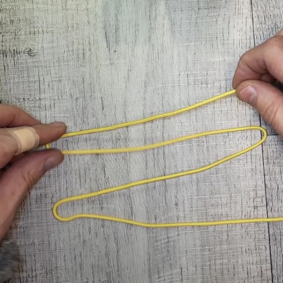

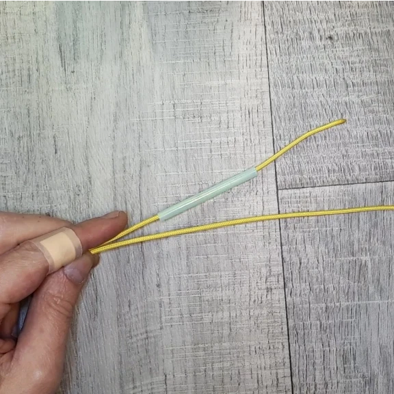
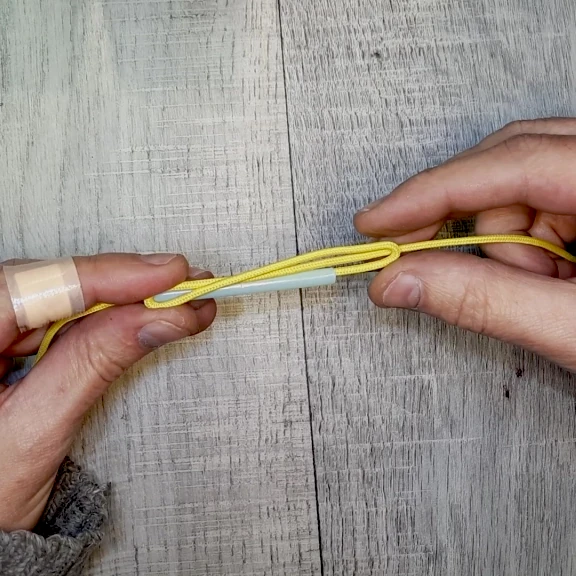
Сначала шнур нужно сложить так, чтобы в рабочей части получилась основа из четырёх нитей. Именно это положение задаёт плотную сердцевину будущей намотки. Затем подрежьте короткий кусок трубочки под длину наматываемого участка и наденьте её на один конец шнура.
После этого соберите стартовую заготовку так, как показано на фото: трубочка оказывается в нужной зоне, один конец шнура с ней укладывается правильно, а верхняя петля сразу получает нужную форму. Если на этом этапе всё собрано аккуратно, дальнейшая намотка идёт намного ровнее.
Сделайте первые витки, продолжите намотку и уберите трубочку
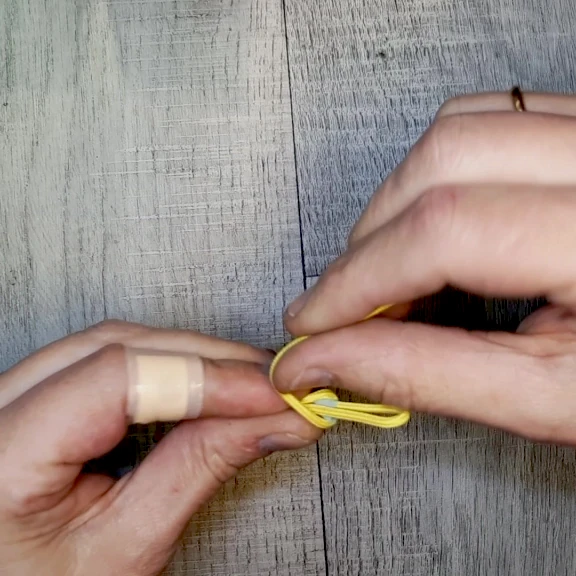
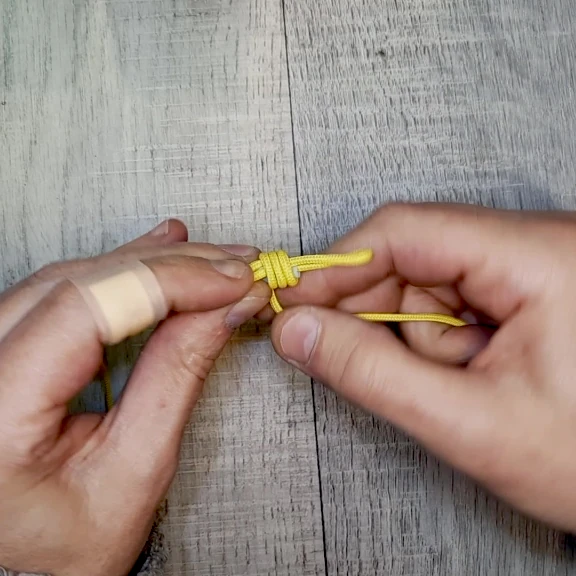
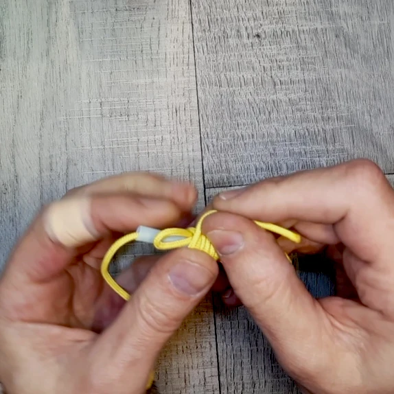
После того как основа собрана, начинайте укладывать первые витки. Они особенно важны: если старт получился ровным, дальше цилиндрическая намотка собирается заметно проще.
Продолжайте намотку виток за витком, стараясь держать одинаковое натяжение и не оставлять зазоров. Когда нужная длина уже набрана, трубочку можно аккуратно убрать: намотка к этому моменту уже держит форму.
Сформируйте финальную петлю и подтяните узел

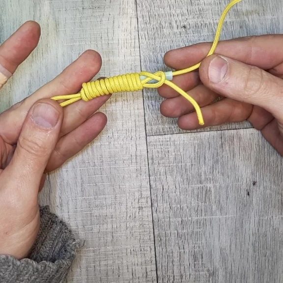
Теперь нужно вывести финальную петлю и постепенно подтянуть всю конструкцию. Делать это лучше без резких рывков:
сначала выровнять петлю и края намотки, а уже потом окончательно уплотнить узел.
На этом шаге особенно важно следить, чтобы витки не разъехались и цилиндр не перекосился. Если всё собрано аккуратно, получается ровная основа темляка с верхней петлёй и свободными концами снизу.
Проверьте форму заготовки перед установкой бусины

После окончательной подтяжки ещё раз выровняйте намотку и посмотрите, как выглядит вся основа целиком.
Сейчас удобно проверить длину петли, плотность цилиндра и общую симметрию.
Если на этом этапе что-то выглядит неровно, лучше поправить сразу — после установки бусины и финальной фиксации возвращаться к основе уже неудобно.
Установите бусину
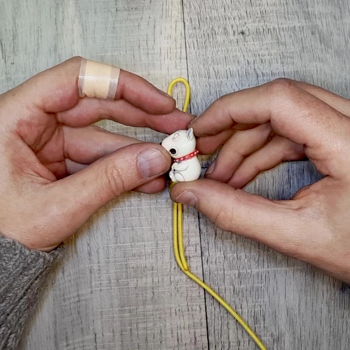
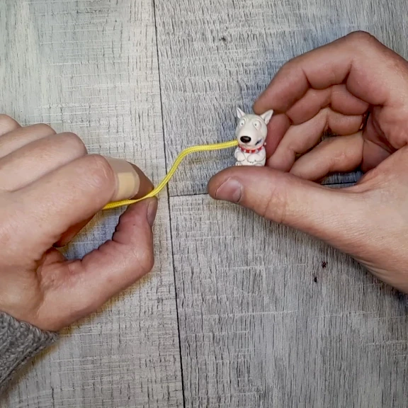
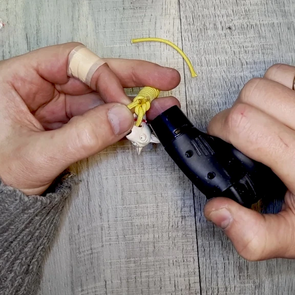
Проденьте свободные концы шнура в отверстие бусины и подтяните её к основанию темляка. На этом этапе удобно сразу выбрать правильное положение бусины, чтобы лицевая сторона потом смотрела как надо.
Лучше не оставлять слишком большой зазор между бусиной и намоткой: в компактном темляке собранная посадка обычно выглядит аккуратнее.
Соедините два конца в одну нить и спрячьте место сплавления внутрь узла
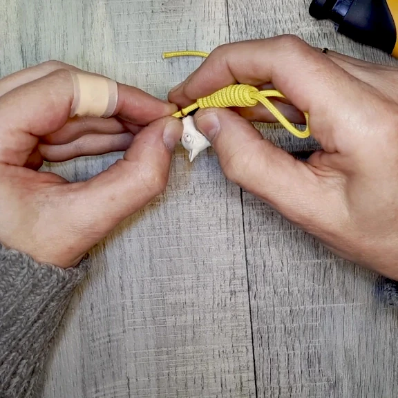
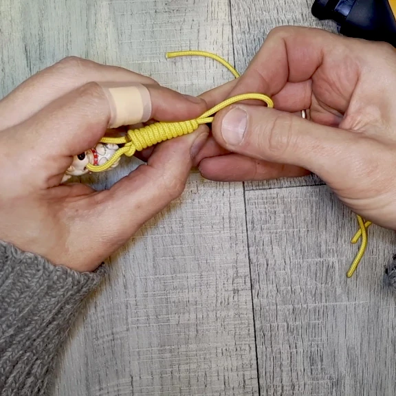
После установки бусины задача здесь не просто в том, чтобы укоротить и оплавить концы.
Смысл этого этапа — соединить два конца шнура в одну общую нить,
а затем убрать место сплавления внутрь плетения, чтобы темляк выглядел аккуратно и не имел торчащих хвостов.
Сначала подрежьте концы до нужной длины, затем аккуратно подплавьте их и соедините между собой. Когда место сплавления остынет и уже держится, потяните за конец шнура в верхней части узла, чтобы затянуть этот участок внутрь намотки. После этого пройдитесь по всем виткам ещё раз и окончательно подтяните темляк в плотную, собранную структуру.
Получите готовый темляк с бусиной
В итоге получается компактный темляк с ровной намоткой и аккуратно установленной бусиной.
Такой вариант хорош тем, что собирается быстро, не требует сложной схемы плетения и при этом выглядит законченным.
Этот способ удобно брать как базовый: дальше можно менять цвет шнура, размер бусины, длину петли и общую длину подвеса под свои задачи.
Полезные замечания по сборке
- Не спешите с первыми витками. Именно они задают геометрию всей намотки.
- Трубочку лучше резать под конкретную задачу. Так проще получить нужную длину цилиндра.
- Подтягивайте узел постепенно. Тогда витки меньше стремятся разъехаться или перекоситься.
- Место сплавления лучше убирать внутрь. Так темляк выглядит чище и ощущается как единая плотная конструкция.
Что делать дальше
Если этот материал уже разобран, дальше лучше перейти к ближайшим связанным темам — без длинного списка и лишних повторов.
Видео процесса
В ролике показан весь процесс: подготовка шнура и трубочки, намотка основы, формирование финальной петли, установка бусины, соединение концов и окончательная утяжка темляка. Видео удобно использовать вместе с пошаговыми фото выше: кадры помогают спокойно повторить каждый этап руками, а ролик даёт общий ритм сборки.
Частые вопросы
Это точно петля Линча?
В темлячной и бытовой среде такую схему чаще всего называют именно петлёй Линча. Также можно встретить близкие по смыслу названия, связанные с затягивающейся намотанной петлёй.
Зачем здесь нужна трубочка?
Трубочка работает как временная направляющая. На ней проще собрать плотную ровную намотку, а потом аккуратно подтянуть узел без сильных перекосов.
Можно ли сделать такой темляк без бусины?
Да. В этом случае получится просто компактный подвес с аккуратной намоткой и верхней петлёй.
Почему концы лучше соединять в одну нить и убирать внутрь?
Так темляк получается чище по виду, без торчащих хвостов. Кроме того, вся конструкция собирается в более плотную и законченную форму.
Какой шнур лучше использовать?
Лучше брать шнур, который проходит в отверстие бусины и при этом нормально держит форму после подтяжки и оплавления концов.